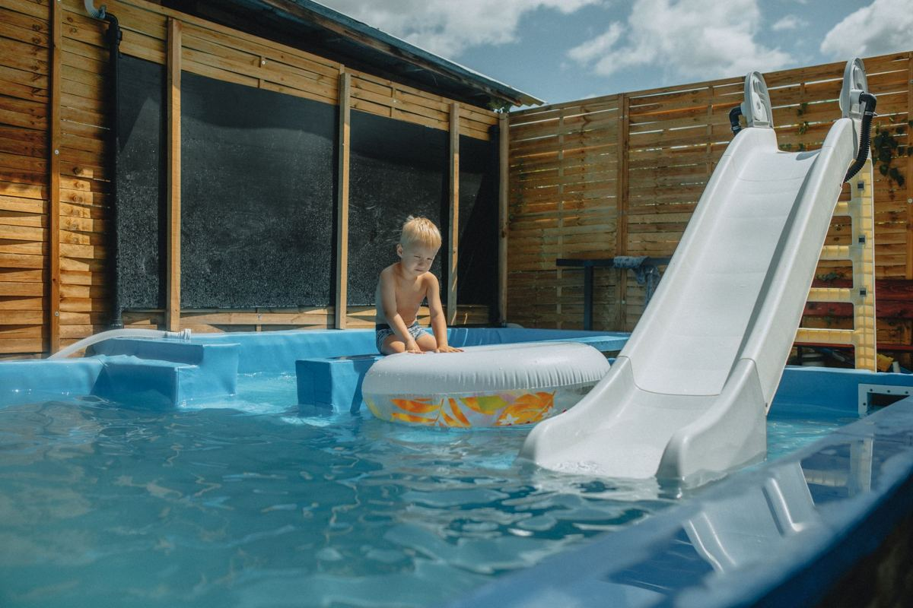

An above-ground pool comes out in four stages: the water, the liner, the frame, and whatever is sitting under it. The water goes first and it is the stage with rules attached, because where you send it matters to your city. The rest is a teardown. The pool gets cut apart, the steel goes to a metal recycler, and you are left with bare ground.

Most of these calls come in at the end of a season, and they sound the same. The pool has been green since July, the pump quit, the kids are older, and the thing that was going to be fun has been a chore for two summers. That is a normal reason to take one out, and it is the most common one we hear.
The water goes first, and it has rules
A full pool holds far more water than people picture, and it is not the kind of water you can quietly run into the street. Pool water carries chlorine or salt, and in most North Texas cities the storm drain is a direct line to a creek rather than to a treatment plant.
Two things matter. The first is chemistry. Chlorinated water usually needs to sit unchlorinated for several days, or be treated, before it is safe to release onto ground. The second is where it goes. Slowly, onto your own turf and landscape beds, is the release most cities prefer, and away from a neighbor's foundation or a slope that runs to the curb.
Every city writes this a little differently, so check yours before you pull the plug. The TCEQ stormwater program is the state-level context for why the rule exists at all, and your city's public works or environmental services page will have the local version. Saltwater pools get more scrutiny than chlorine, because salt does not break down the way chlorine does.
Drain it days ahead, not the morning of. A pool that is still half full on teardown day is a job that does not happen. Water is also the one part of this we cannot do anything about once the crew is in the driveway.
The liner never comes out in one piece
Once the water is out, the liner is a heavy sheet of wet vinyl sitting in a ring of sludge. It does not fold and it does not lift. It gets cut into sections and rolled, and each section still holds water in the creases, which is why a liner is heavier on the way to the trailer than anyone expects.
Vinyl liner is not a recyclable material in any practical local sense, so it goes out as waste. That is the honest answer. The steel is where the recycling happens on this job, not the vinyl.
If the pool sat green for a while, the bottom is a layer of algae and grit that comes out with the liner. Plan for that part of the yard to look bad for a few weeks.
The frame, and where the metal goes
Most above-ground pools are a rolled steel or aluminum wall held by vertical uprights and a top rail, with plastic caps and connectors. It comes down in the reverse of how it went up: top rails and caps off, wall unrolled and cut into manageable sections, uprights and bottom track pulled last.
The metal is the good news. Steel and aluminum both have a real recycling market, which is why the frame does not go to a landfill. EPA's recycling basics page covers why metal is one of the few materials where the recycling claim holds up under scrutiny. The plastic connectors, the caps and the resin uprights on newer pools are a different story and go out as waste.
Pumps, filters, hoses, the ladder, the solar cover and the reel come off the same job. A sand filter has to be emptied before it moves, and that sand is heavy and goes with the load rather than into a yard waste bag.
This is the same class of work as a hot tub, and the approach is nearly identical. Our hot tub removal page covers the structure side of it, and hot tub, shed and playset removal walks through how backyard structures generally get cut apart and carried out through a gate.
What is under the pool
This is the stage people forget to plan for, and skipping it is why a finished teardown can still leave a yard nobody wants to look at.
Under most above-ground pools is a leveled sand base, sometimes a few inches of it, often over landscape fabric, sometimes over patio blocks under the uprights. That sand is not going to grow grass and it is not going to spread itself. It either gets raked out across the yard, hauled off, or left as a ring for a landscaper to deal with. Decide which before the crew arrives, because hauling sand is a different job than hauling a pool.
Then there is the ring itself. Grass under a pool has been dead for years and the soil is compacted. Some people put a shed or a patio there, some seed it, some do nothing and let it fill in over a season. Any patio blocks, pavers, edging or retaining timbers that came out with it are yard debris, and a poured slab or footing is construction debris. If the property is in Little Elm, we haul the yard waste off a Little Elm lot as part of the same job.
The chemicals stay behind
Pool chemicals are household hazardous waste and they do not go on our trailer. That is not a preference. Chlorine tabs, shock, muriatic acid, algaecide and stabilizer are exactly the category no hauler in Texas puts in a transfer station load.
They go to your city's household chemical collection program, and those programs are free to residents in most of the northern suburbs. Plano runs a household chemical collection program, and Frisco publishes its own bulk trash and collection rules for what the city will and will not take at the curb. Our junk removal in Frisco page has the local detail for that city.
Half-empty containers of anything, unlabeled jugs in the pool shed, and old test kits all belong in the same trip. Set them aside before teardown day so nothing ends up on the trailer by accident.
How the job runs
Send a photo of the pool, the deck if there is one, and the gate the material has to come through. Gate width is the real constraint on a backyard job, not the pool. A crew looks at what is going and you get a firm number before anything is cut. The quote is the bill, and disposal is included.
Our own crews do the teardown, which matters more on a job like this than on a curbside pickup. Someone is going to be cutting steel in your backyard next to a fence and a gas line, and that is not work to hand to labor hired off an app that morning. Tell us the city and the week you want it gone, and send us the photos when you are ready. There is no rush on our end.
Frequently asked questions
Do you drain the pool for us?
No. Draining takes days and has to follow your city's rules about where the water goes. Have it drained before teardown day, because a pool that is still full is a job that gets rescheduled.
Do you take the deck around the pool too?
Yes. Wood decking, stairs, railings and the framing come out with the rest. Tell us it is part of the job when you send photos so the crew plans for it.
What about the sand underneath?
It can be raked out across the yard or hauled off. Sand is heavy and it is a separate decision, so let us know which one you want before we quote the job.
Can you take the leftover chlorine and pool chemicals?
No. Those are household hazardous waste and they go to your city's collection program. We will point you at the right one for your city.
Will the yard be ready to plant when you leave?
No. Expect bare, compacted ground and a dead ring where the pool sat. What is left is clear and hauled, and the landscaping is a separate job for someone else.
An above-ground pool is one of the few things in a backyard that goes up in a weekend and takes years to come down, mostly because nobody wants to start. The rest of what we haul is on the services page.